От тревоги до плана — за 15 минут
Сервис устроен так, чтобы любой собственник, независимо от технической подготовки, смог получить пользу с первого захода. Без длинных форм, без юридического жаргона, без обязательных регистраций для базовой диагностики.

AI работает между собственником и юристом, не заменяя ни одного из них.
Самостоятельная диагностика и работа
Подходит для простых кейсов: собственник готов сам обрабатывать или сдавать в аренду; ситуация без процессуальных нарушений уполномоченного органа.
Шаг 1
Регистрация
Через Госуслуги (ЕСИА) — самый быстрый путь, профиль предзаполнен. Или по СМС-коду на телефон. Раздельное согласие на обработку ПДн. Без обязательного email.
Шаг 2
Добавить участок
Введите кадастровый номер, адрес или включите геопозицию. Сервис в фоне запрашивает выписку ЕГРН через сертифицированного провайдера (Контур.Реестро). Время — 5–10 минут.
Шаг 3
Диагностика AI-2
AI анализирует выписку, спутниковые данные и историю собственника. Формирует риск-карточку: уровень риска (зелёный/жёлтый/красный), признаки нарушения, ссылки на статьи закона.
Шаг 4
Открытие кейса
Если риск средний или высокий — нажимаете «Открыть кейс». AI-3 генерирует первичный пакет шаблонов (объяснительная, план восстановления). Появляется план из 5–9 шагов с дедлайнами.
Шаг 5
Работа по шагам
На каждом шаге — действие пользователя (загрузить акт, фото с GPS, отправить документ в Россельхознадзор). Push-уведомления о дедлайнах. AI-1 распознаёт загруженные документы.
Шаг 6
Подписание ПЭП
Каждый исходящий документ подписывается ПЭП через СМС-код. Это юридически значимо по 63-ФЗ. Журнал подписаний хранится 5 лет.
Шаг 7
Закрытие кейса
После выполнения всех шагов и получения подтверждения от уполномоченного органа — кейс переходит в статус «Закрыт». Запрашиваем NPS. Документы остаются в архиве 3 года.
Подключение аккредитованного юриста
Подходит для сложных кейсов: процессуальные нарушения, риск изъятия в ближайшие месяцы, большая стоимость участка, конфликт с уполномоченным органом.
Шаг 1
AI-6 маршрутизация
На основании кейса (регион, тип проблемы, сложность) AI-6 предлагает 2–3 кандидатов из базы аккредитованных юристов-партнёров. Видите профиль, рейтинг, ставку.
Шаг 2
Выбор юриста и договор
Выбираете юриста. AI-3 генерирует договор-оферту между вами и юристом. Подписываете ПЭП (СМС-код). Юрист подписывает УКЭП (КриптоПро).
Шаг 3
Оплата
Оплата через эквайринг банка-партнёра (СБП или карта). Средства блокируются до подтверждения первого этапа работ юриста. Фискальный чек по 54-ФЗ.
Шаг 4
Сопровождение
Юрист принимает кейс в течение 4 часов (иначе — следующему). Прямой чат в приложении. Все действия юриста — видны в кейсе. Документы юриста подписываются УКЭП.
Шаг 5
Закрытие
По окончании работ — подтверждение от вас и юриста. Расчёт по фактическому исходу. Возможен возврат средств при существенных нарушениях со стороны юриста.
Делегированная роль «помогаю родственнику»
Когда собственник — пожилой родственник, и кейс ведёт сын/дочь по нотариальной доверенности. Реализовано с защитой основного владельца.
Как работает
Помощник регистрирует свой аккаунт. Загружает скан нотариальной доверенности. AI-1 OCR проверяет основания. Каждое важное действие (открытие кейса, подписание документа, оплата) подтверждается СМС-кодом основного владельца — даже если у него нет смартфона.
Защита от подделки
СМС-код приходит на телефон основного владельца, который указан в доверенности (мы проверяем этот номер через Госуслуги). Без подтверждения каждый раз помощник не может выполнить юридически значимые действия от имени собственника.
Когда применяется
Доля пользователей 60+ в целевой аудитории — существенная. Многие из них предпочитают, чтобы кейс вёл взрослый ребёнок. Сценарий — реальная нужда, не «фича для красоты».
Аудит
Все действия помощника записываются в журнал с указанием делегированного режима. Основной владелец в любой момент может отозвать делегирование одним нажатием.
Где работает искусственный интеллект
AI — помощник, не замена юриста. Все процессуальные решения принимает либо собственник, либо аккредитованный юрист с УКЭП. AI делает первый шаг быстрым и обоснованным.
AI-1 · Распознавание документов (OCR)
Загруженный пользователем PDF или фото распознаётся, классифицируется автоматически (выписка ЕГРН, решение Россельхознадзора, акт обследования, иное). Точность ≥ 90% на типовых документах. Поля извлекаются в структурированный JSON для дальнейшей обработки.
AI-2 · Диагностика рисков
Скоринг риска изъятия по выписке ЕГРН + спутниковым данным + истории собственника. Алгоритм v1.0 — правила (rule-based) + логистическая регрессия на 100 размеченных кейсах. С М7 — переход на градиентный бустинг с учётом фидбэка от юристов.
AI-3 · Генерация документов
Генерация шаблонов под конкретную ситуацию: 7 типов документов × региональная адаптация. Шаблоны — `T-01..T-07` в проектной базе. Все шаблоны прошли ревизию аккредитованного юриста до релиза.
AI-4 · Чат-консультант RAG
Чат на базе нормативной базы (101-ФЗ, ПП-826, ФЗ-307, 152-ФЗ, 63-ФЗ + 7 типовых стратегий + земельный глоссарий). Каждый ответ — со ссылкой на статью. Использует pgvector + Yandex/GigaChat embeddings.
AI-5 · Антифрод-скоринг
Защита от подделки доверенности, попыток открытия кейса на чужой кадастровый номер, аномальных паттернов использования. Правила + изоляционный лес (с М7). Интеграция с KYC банка-партнёра.
AI-6 · Маршрутизация юриста
Подбор 2–3 юристов по weighted score: регион + специализация + рейтинг + загрузка + географическая близость. Отсев юристов с низкой репутацией. Учёт региональной специфики (например, в Калуге — Минэкономразвития).
AI-7 · Перевод юр.текста
Превращает сложные формулировки закона в простой человеческий язык. Например, «принудительное прекращение права собственности по основаниям ст. 6 101-ФЗ» → «у вас могут забрать участок, если 3 года не использовали». Помогает 60+ аудитории.
Региональные плейбуки
Каждая ИИ-функция учитывает специфику 7 регионов: уполномоченный орган (Минсельхоз vs Минэкономразвития в Калуге), размер субсидий, способ извещения дольщиков, подсудность исков.
Девять интеграций для бесшовного опыта
ЕГРН
Контур.Реестро (основной) + Parser-API (резерв)
Получение актуальной выписки за 5–10 минут. Все интеграции — официальные, без скрэпинга.
ЕСИА (Госуслуги)
OAuth 2.0
Регистрация и аутентификация с предзаполнением профиля. Самый быстрый онбординг.
Банк-партнёр
Эквайринг + СБП + 54-ФЗ
Безопасные платежи через выбранный банк (Тинькофф / Точка / Альфа). Фискальный чек.
LLM-провайдеры
YandexGPT 5.1 Pro + GigaChat 2/Ultra
A/B routing для повышения качества и снижения стоимости. Обе экосистемы — в РФ.
СМС-шлюз
Devino + СМС-Аэро (резерв)
Доставка СМС-кодов для аутентификации и подписания ПЭП. SLA ≥ 99%.
Push-уведомления
RuStore Push (Android) + APNs (iOS) + FCM
Доставка уведомлений о дедлайнах и обновлениях кейса. Без отслеживания.
СДЭК-Mail или Mailgun-РФ
Транзакционные письма (отчёты, восстановление, подтверждения). Опционально — без обязательной привязки.
Yandex.OPC
Соответствие 149-ФЗ ОРИ
Отправка обязательных копий аудит-логов в Yandex.OPC. Retention 1 год по закону.
КриптоПро
УКЭП юристов-партнёров
Юристы подписывают процессуальные документы УКЭП через КриптоПро SDK. Юр.значимость по 63-ФЗ.